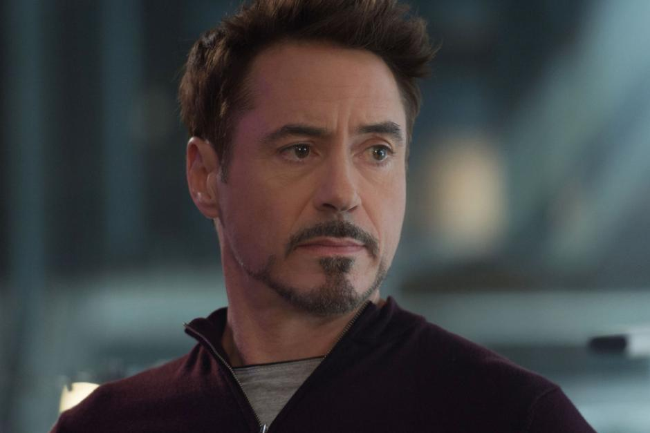
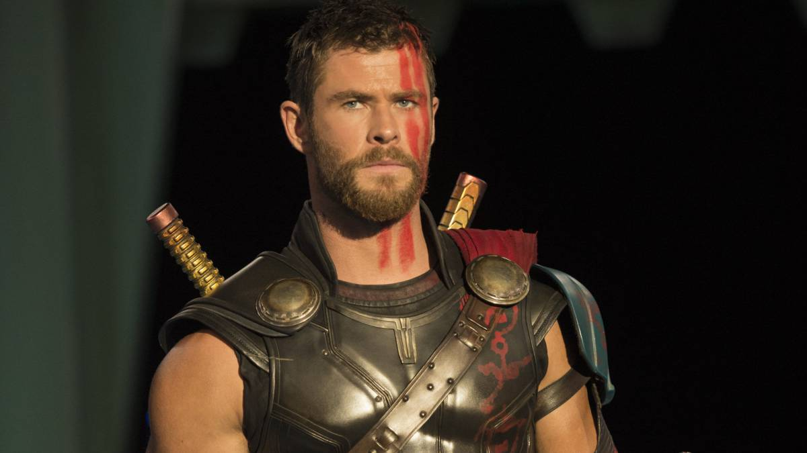
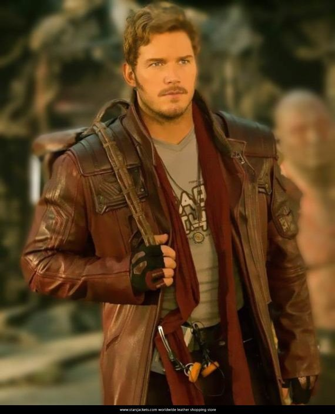
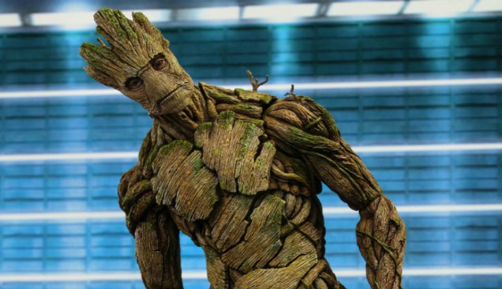

Después de los acontecimientos de Thor: Ragnarok y de haber adquirido la Gema del Poder del planeta Xandar en manos de los Nova Corps, el malvado titán Thanos y sus lugartenientes, Ebony Maw, Cull Obsidian, Próxima Midnight y Corvus Glaive, interceptan la nave espacial que transportaba a los sobrevivientes de la destrucción de Asgard. A medida que extraen la Gema del Espacio del Teseracto, Thanos somete a Thor, domina a Hulk y mata a Loki. Mientras que Heimdall usa lo que le queda de energía oscura para enviar a Bruce Banner / Hulk de regreso a la Tierra invocando el Bifröst antes de ser asesinado por Thanos. Una vez que cumple su cometido, Thanos se va con sus lugartenientes y destruye la nave espacial.4 Mientras tanto Hulk aterriza forzosamente en el Sanctum Sanctorum de la ciudad de Nueva York, transformándose en Bruce Banner y les advierte al Doctor Strange y a Wong que Thanos se dirige hacia la tierra para llevar a cabo su plan de asesinar a la mitad de la vida en el universo; en respuesta, Strange recluta a Tony Stark / Iron Man. Maw y Obsidian llegan para arrebatarle la Gema del Tiempo a Strange, llamando la atención de Peter Parker / Spider-Man. Maw captura al Doctor Strange, pero no logra quitarle la Gema del Tiempo debido a un encantamiento. Iron Man y Iron Spider persiguen la nave espacial de Maw, mientras Banner contacta a Steve Rogers y Wong se queda para proteger el Sanctum Sanctorum. En algún lugar del espacio Los Guardianes de la Galaxia responden a una llamada de auxilio emitida por la nave asgardiana antes de ser destruida y rescatan a Thor, quien se encontraba flotando entre los restos de la nave. Luego de ser rescatado, Thor les menciona que Thanos va en busca de la Gema de la Realidad, la cual está en posesión del Coleccionista en Knowhere. Rocket Raccoon y Groot acompañan a Thor hacia Nidavellir, donde ellos ayudan a Eitri a crear un hacha de batalla capaz de matar a Thanos llamada: la Stormbreaker y los poderes de Thor se revitalizan. En Escocia, Midnight y Glaive emboscan a Wanda Maximoff y Visión para obtener la Gema de la Mente en la frente de Visión. Rogers, Natasha Romanoff / Black Widow y Sam Wilson / Falcon los rescatan y se refugian con James Rhodes y Banner en el campamento de Los Vengadores. Visión ofrece sacrificarse haciendo que Maximoff destruya la Gema de la Mente en su cabeza para evitar que Thanos la obtenga. Rogers sugiere que viajen a Wakanda, donde él cree que tienen los recursos para extraer la gema sin destruir a Visión. En Knowhere, Peter Quill, Gamora, Drax y Mantis encuentran a Thanos con la Gema de la Realidad ya en su poder. Thanos secuestra a Gamora, su hija adoptiva, quien revela la ubicación de la Gema del Alma para salvar a su hermana adoptiva Nebula de la tortura. Thanos y Gamora viajan al planeta Vormir, donde Cráneo Rojo, guardián de la Gema del Alma, les informa que la gema solo se puede obtener sacrificando a un ser amado. Thanos, sacrifica a Gamora con angustia lanzándola al vacío, para después entrar al plano donde está la Gema del Alma y finalmente la obtiene. Nebula escapa de su cautiverio y les pide a los guardianes restantes que la encuentren en las ruinas del mundo natal de Thanos, el planeta Titán. Iron Man y Iron Spider matan a Maw y rescatan al Doctor Strange. Aterrizando en Titán, se encuentran con Peter Quill / Star-Lord, Drax y Mantis. El grupo forma un plan para quitarle el Guantelete del Infinito a Thanos después de que Strange usa la Gema del Tiempo para ver 14 millones de futuros alternos posibles, viendo solo uno en el que logran vencerlo. Thanos llega y justifica sus planes afirmando que son necesarios para garantizar la supervivencia de un universo amenazado por la superpoblación. El grupo lo somete hasta que Nebula deduce que Thanos ha matado a Gamora. Enfurecido, Star-Lord lo ataca, permitiendo que Thanos rompa el control del grupo y los derrote. Iron Man termina gravemente herido por Thanos, pero después el Doctor Strange decide ceder y hace el intercambio de la Gema del Tiempo a Thanos por la vida de Stark. En Wakanda, Rogers se reúne con Bucky Barnes antes de que el ejército de Thanos invada la nación. Los Vengadores, junto con el rey T'Challa y las fuerzas de Wakanda, montan una defensa mientras Shuri trabaja para extraer la Gema de la Mente del cráneo de Visión. Banner, incapaz de transformarse en Hulk, lucha en la armadura Hulkbuster de Stark. Thor, Rocket y Groot llegan para respaldar a Los Vengadores; Midnight, Obsidian y Glaive son asesinados y su ejército es derrotado. Thanos llega a la Tierra y en ese momento, Wanda al no tener más opción, decide destruir la Gema de la Mente junto con Visión, pero Thanos usa el poder de la Gema del Tiempo para resucitar a Visión y revertir la destrucción de la gema, luego lo mata él mismo arrancándole de su cabeza la Gema de la Mente. Thor por su parte hiere gravemente a Thanos con la Stormbreaker, sin embargo Thanos inmediatamente activa el poder completo del Guantelete del Infinito chasqueando sus dedos y se teletransporta a un lugar desconocido. La mitad de la vida en el universo comienza a desintegrarse, incluidos Bucky Barnes, T'Challa / Pantera Negra, Groot, Wanda Maximoff, Sam Wilson / Falcon, Mantis, Drax, Peter Quill / Star-Lord, el Doctor Strange y Peter Parker / Iron Spider, este último muere en los brazos de su mentor. Iron Man y Nebula permanecen atrapados en el planeta Titán, mientras Banner, M'Baku, Okoye, Máquina de Guerra, Rocket, Rogers, Black Widow y Thor quedan en el campo de batalla de Wakanda intentando averiguar qué está sucediendo. Mientras tanto, Thanos se recupera en otro planeta y mira con satisfacción el atardecer. En una escena post-créditos,5 Nick Fury y Maria Hill se encuentran en la ciudad de Nueva York intentando localizar a Tony Stark, quien no responde desde que descendió la nave de Maw en la ciudad, pero inesperadamente ambos descubren que las personas a su alrededor comienzan a morir desintegradas, producto del chasquido de Thanos. Hill también es afectada y muere desintegrada en polvo. Preso del pánico, Fury intenta enviar un mensaje de auxilio con un dispositivo que tenía guardado, pero también es afectado y muere desintegrado dejando caer el dispositivo en la calle. La pantalla del dispositivo muestra que el mensaje ha sido recibido, revelando la insignia de la Capitana Marvel. Luego aparece la frase : "Thanos regresara".
Iron Man (en español El hombre de hierro), es un superhéroe, personaje de ficción que aparece en los cómics publicados por Marvel Comics. Tras el apodo se encuentra Anthony Edward Stark, mejor conocido como Tony Stark, un muy exitoso y famoso multimillonario, que, además de haber sido un destacable niño prodigio y poseer una de las mentes más brillantes del mundo, es también un grandísimo empresario e ingeniero y fanático de la serie de ciencia ficción Star Trek. Tiene una lujosa, caótica y extravagante vida llena de excesos, basada principalmente en una enorme fortuna gracias a sus grandes conocimientos mecánicos y científicos, sus peculiares y distinguidas fabricaciones y por supuesto, a la herencia de su fallecido padre Howard Stark. La vida de Stark da un repentino giro de 180 grados el día en el que es secuestrado por un grupo de terroristas y sufre una gravísima lesión debido a que, tras una gran explosión, un fragmento de metralla impacta contra él y acto seguido se incrusta en su pecho, muy cerca de su corazón, la cual tiende a hacerle daño y aproximarle más hacia la muerte cada día. Tras el impacto, es operado y recluido durante meses en un zulo, donde sus secuestradores le obligan a que les construya un arma de destrucción masiva. En lugar del arma, Tony crea una armadura de acero con múltiples armas incorporadas a su medida, la cual utilizaría posteriormente para salvar su vida y escapar así de su cautiverio. Finalmente éste logra su objetivo, tras ello, al volver a su mansión decide dejar de fabricar armas que puedan hacer daño al mundo y en lugar de ello reconstruye y mejora su armadura, convirtiéndose así en "Iron Man", un súperhéroe que trata de proteger el mundo. Gracias a Industrias Stark, que ha creado muchas armas militares, Tony, junto con otros dispositivos tecnológicos creados por él mismo, los ha integrado en su armadura a través de mejoras que él mismo realiza constantemente, ayudándolo así a lograr ser prácticamente invencible. Inicialmente, Iron Man no era más que un concepto de Stan Lee con el fin de explorar los temas de la Guerra Fría, particularmente con el papel de la tecnología y los negocios estadounidenses en la lucha contra el comunismo, hasta que fue cogiendo forma de lo que es hoy en día después de múltiples planteamientos. Finalmente, decidieron remodelar a Iron Man y sus luchas relacionadas principalmente con temas de la Guerra Fría a temas más contemporáneos como lo es el terrorismo, la corrupción y la delincuencia general. Durante la mayor parte de la historia de la publicación del personaje, Iron Man fue miembro y líder del equipo de superhéroes Los Vengadores, ha aparecido en varias encarnaciones de sus diversas series de cómics y también fue adaptado para varios programas de televisión y películas animadas. Uno de sus mayores reconocimientos y popularidad que se le otorgaron a Iron Man fue al llegar a la pantalla grande, donde bajo la interpretación del actor Robert Downey Jr. en la película Iron Man (2008), este personaje fue todo un fenómeno mundial. Downey, quien recibió mucha aclamación por su actuación, repitió el papel en un cameo en The Incredible Hulk (2008), dos secuelas de Iron Man; Iron Man 2 (2010) y Iron Man 3 (2013), The Avengers (2012), Avengers: Age of Ultron (2015), Capitán América: Civil War (2016), Spider-Man: Homecoming (2017), Avengers: Infinity War (2018) y su secuela sin título (2019) en el Marvel Cinematic Universe. También hay diversos videojuegos sobre el personaje. Iron Man estuvo en el puesto 12 en el Top 100 de IGN sobre los héroes de los cómics en 2011.
Thor, cuyo nombre real es Thor Odinson conocido como Donald Blake en la tierra como su identidad secreta, es un superhéroe y príncipe-guerrero asgardiano, el Dios del Trueno, y un protector auto-proclamado de la Tierra. Thor, posteriormente, se volvió muy conocido por sus acciones en la Tierra. Thor tuvo una infancia buena, criado en Asgard como el atesorado hijo de Odín y su esposa Frigga. Su mejor amigo y compañero de juegos era su hermano adoptivo Loki y aunque eran rivales por el trono de su padre, ellos todavía permanecían como compañeros cercanos. El personaje fue retratado por primera vez en acción en vivo por Eric Allan Kramer en la película de televisión de 1988 The Incredible Hulk Returns. Chris Hemsworth retrata a Thor Odinson en las películas de Marvel Cinematic Universe: Thor, The Avengers, Thor: The Dark World, Avengers: Age of Ultron y Thor: Ragnarok, y retomará su papel en Avengers: Infinity War y su continuación sin título. Además, se utilizaron imágenes de archivo de Hemsworth como Thor en los episodios "Pilot " y "The Well" de Marvel, Agentes de SHIELD,12 Thor colocan
Cuando por accidente la nave de J'son cae en la Tierra, él es rescatado por Meredith Quill. Los dos forman una relación, mientras J'son hace reparaciones a su nave. Eventualmente, J'son se ve obligado a salir para regresar a casa y luchar en una guerra. Se va, sin saber que Meredith está embarazada de Peter Quill. 10 años más tarde, Meredith es asesinada cuando es atacada por dos soldados Badoon que han venido a matar a Peter y terminar la línea de sangre de J'son. Peter los mata con una pistola, encuentra la pistola de su padre por accidente, y escapa de su casa antes de que sea destruida por la nave Badoon. Los Badoon presumen que Peter es asesinado y se va. Peter es colocado en un orfanato y finalmente se une a la NASA. Finalmente se explicó que fue criado por su madre Lisa Chang, que era comandante de la NASA.1 Más tarde, cuando su nave funciona mal y está atrapado en el espacio, Peter es encontrado por los Ravagers, un grupo de piratas espaciales liderados por Yondu. Después de que los Ravagers salvan a Peter, que trató de robar su nave. Peter logró superar a todos los miembros de los Ravagers e incluso golpeó a Yondu antes de capturarlo. Después de despertar, Yondu logró liberarse de sus restricciones y atacó a Peter y le dio la opción entre dejarse llevar al espacio sin más problemas o morir allí mismo. Peter en lugar le preguntó si él podría formar parte de su equipo. Yondu al inició no pareció gustarle la idea, pero después descubrió que Peter era como él, ya que ambos eran "niños sin hogares", Entonces Yondu cambió de opinión y lo dejó permanecer en la nave con los Ravagers como su niño de limpieza. Peter decidió quedarse y tratar de aprender todo lo que podía desde el espacio mientras él era parte de los Ravagers.2 El personaje se encuentra con el ex-Heraldo de Galactus, el Caído, y casi muere derrotando por la entidad (la nave de Star-Lord, "Ship", es destruida durante el conflicto). El par es posteriormente encarcelado en la prisión intergaláctica de Kyln.34567Star-Lord es liberado por el héroe Nova durante la "Guerra de Aniquilación" y ayuda en la lucha contra el villano Annihilus.8910111213Posteriormente, Quill actúa como asesor militar del general Kree, Ronan el Acusador. Cuando el planeta natal Kree, Hala, es conquistado por los Phalanx, Star-Lord lidera a una banda de rebeldes contra los invasores hasta que la guerra termina.14151617En un esfuerzo por evitar otra guerra interestelar, Star-Lord forma una nueva versión de los Guardianes de la Galaxia. Son "proactivos" y tratan de poner fin a las amenazas galácticas emergentes temprano,18pero no tienen éxito en la prevención de una guerra entre los Kree y Shi'ar. Durante una guerra con un universo invasor, Star-Lord y Nova están dispuestos a sacrificarse para vencer a Thanos19pero solo Nova muere y Thanos escapa.
Groot es un superhéroe de ficción que aparece en los cómics estadounidenses publicados por Marvel Comics. Creado por Stan Lee, Larry Lieber y Jack Kirby, el personaje apareció por primera vez en Tales to Astonish # 13 (noviembre de 1960). Una criatura extraterrestre, similar a un árbol sensible, el Groot original apareció por primera vez como un invasor que pretendía capturar humanos para la experimentación. Aunque fue presentado originalmente como un villano, el personaje fue reconfigurado como un ser noble y heroico en 2006, y apareció en el cómic Annihilation: Conquest. Más tarde apareció en el cómic Guardianes de la Galaxia, formando parte del equipo homónimo. Groot ha aparecido en una variedad de mercancía asociada con Marvel, como series animadas de televisión, juguetes y tarjetas. Cabe mencionar que Groot es, posiblemente, el único personaje de Marvel que no habla un idioma, sino que sólo dice su nombre, un ejemplo, en los cómics de Guardianes de la Galaxia lo único que dice es: «Yo soy Groot», y no puede decir nada más. Entre sus poderes se encuentran la succión de madera como comida, es resistente al fuego, puede controlar los árboles y tiene un nivel intelectual de genio aunque sólo pueda mencionar su nombre. Groot ha aparecido en una variedad de productos Marvel asociados, incluyendo series de televisión animadas, juguetes y tarjetas de intercambio. Vin Diesel le da voz a Groot en la película de 2014 Guardianes de la Galaxia y su secuela de 2017, Guardianes de la Galaxia Vol. 2, y Krystian Godlewski juega el personaje a través de captura de rendimiento en la primera película. Diesel continuará interpretando al personaje de la próxima película, Avengers: Infinity War. Desde su estreno en la película y su debut en la serie animada, Groot se ha convertido en un icono de la cultura pop, con su línea repetida "I am Groot" convirtiéndose en un meme de Internet.1
